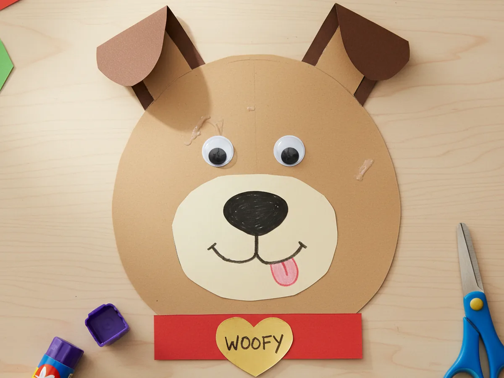
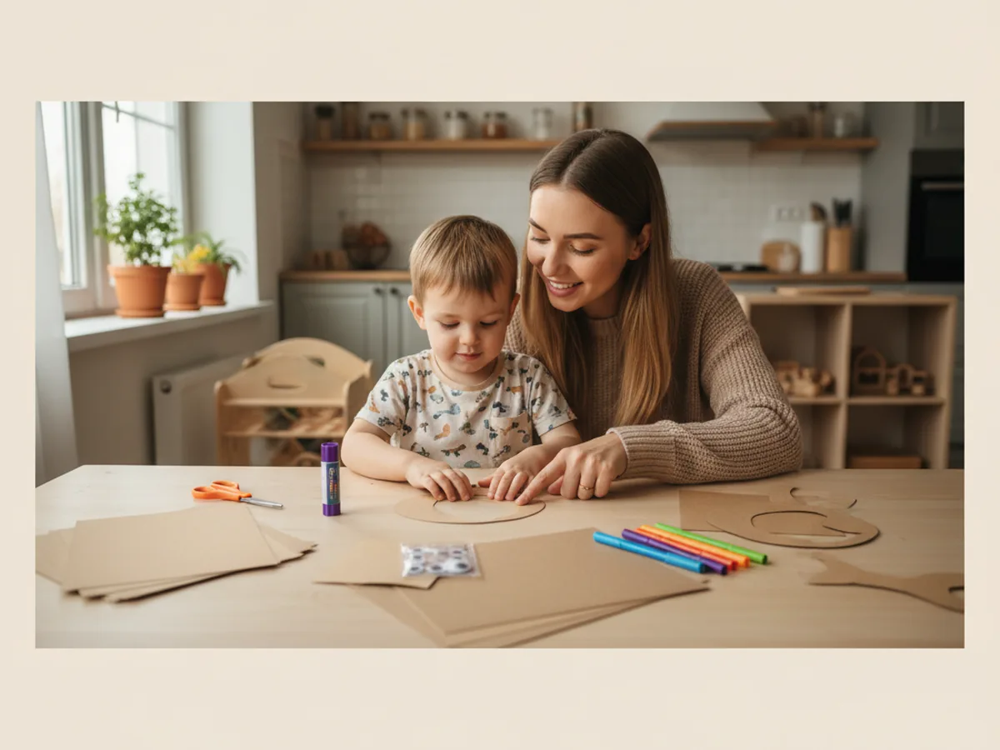
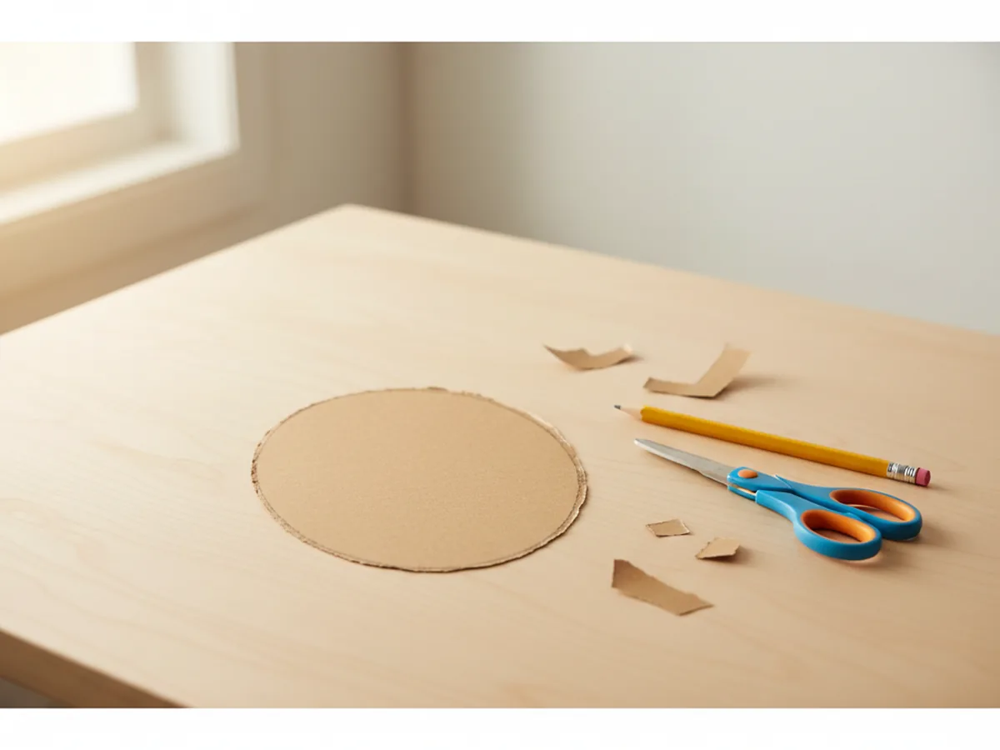
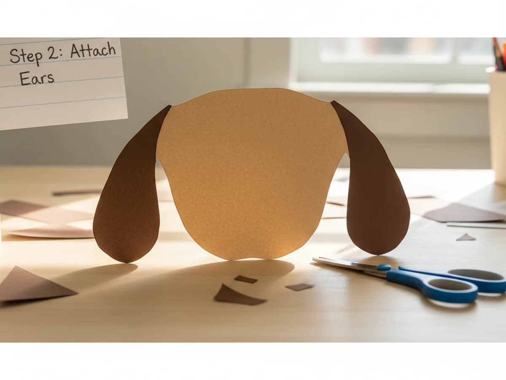
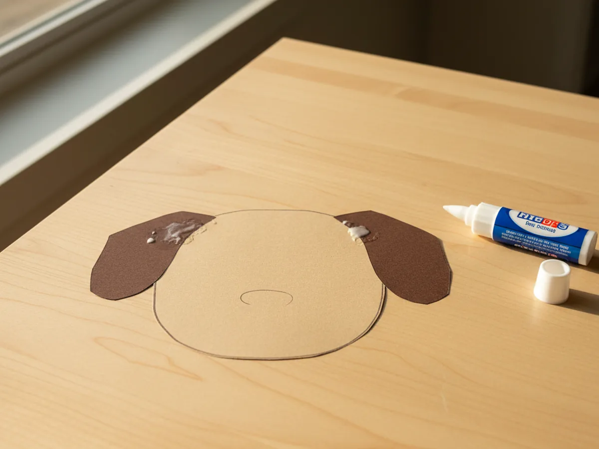
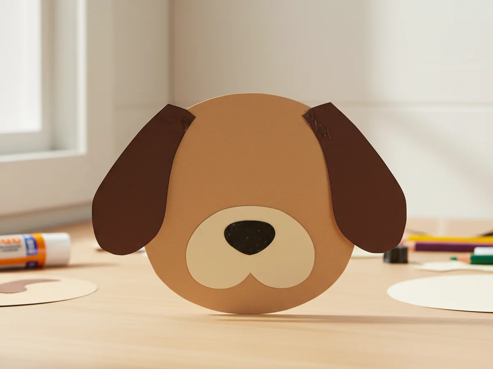
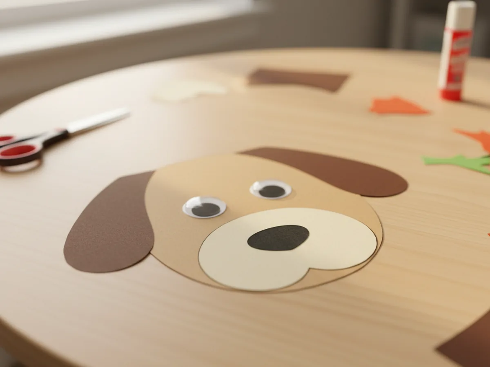
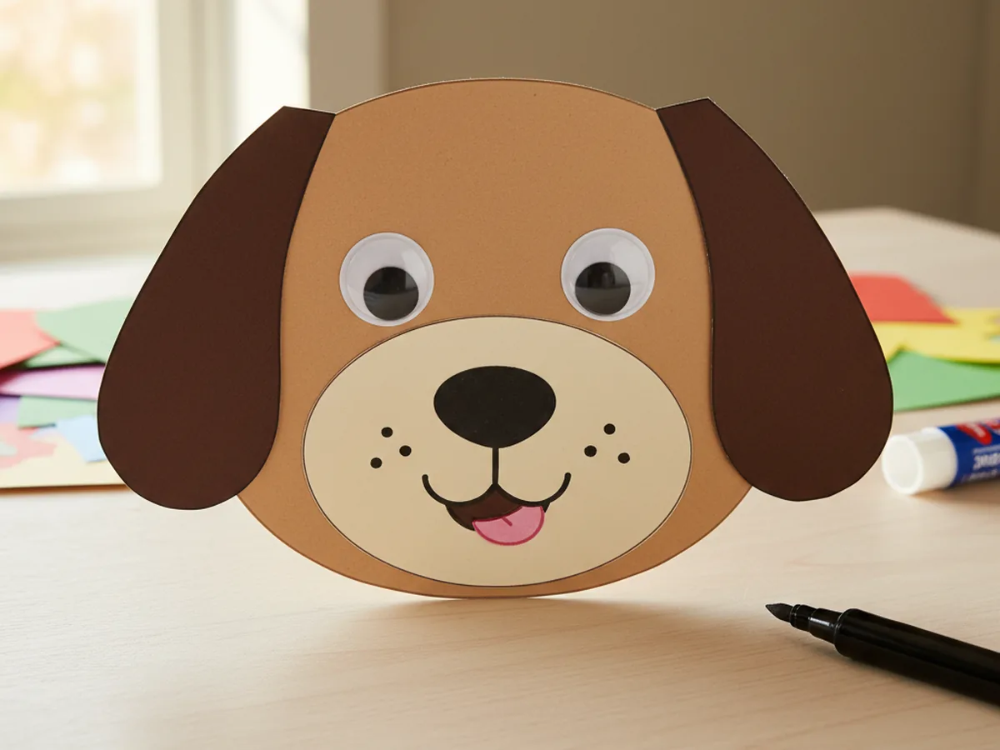
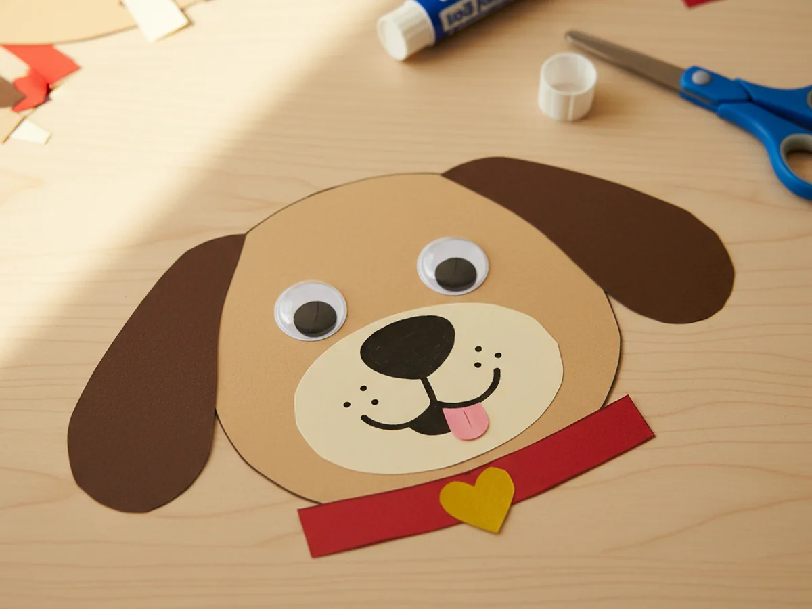

There is something about a friendly little puppy face that makes every child smile. This paper craft dog is one of those sweet, simple projects you can pull together in about 25 minutes with supplies you probably already have in your craft bin. It is gentle, low-stress, and the finished pup looks so cheerful that your child will want to make a whole litter of them. 🐶
The best part is how forgiving the shapes are. A slightly lopsided ear or a crooked smile only adds to the handmade charm. Whether your little one is a complete beginner or has done a few paper dog craft projects before, this tutorial walks through every step so you can relax and enjoy the crafting moment together.
Why Kids Love This Craft
Dogs are one of the very first animals most children fall in love with, so making one out of paper feels instantly rewarding. Kids love that moment when the floppy ears go on and the googly eyes wiggle into place. Suddenly a flat piece of cardstock becomes a friend with a personality, and your child gets to decide what kind of dog it is. A golden puppy, a spotted dalmatian, or a gentle black lab are all within reach.
This paper craft dog also gives little hands plenty of gentle practice. Cutting simple curves, gluing pieces in the right spots, and drawing small details are all small victories that build real confidence. There is no pressure to be perfect, and no tricky folding to trip anyone up. 🎨
From a developmental angle, this paper dog craft quietly supports fine motor skills, hand-eye coordination, and imaginative play. Once the pup is finished, many kids will start making up a whole story about where the dog lives, what its name is, and what tricks it can do. That kind of open-ended play is exactly what makes a craft feel like so much more than a quick activity.

What You'll Need
Here is everything you need to put together a sweet paper craft dog with your child at home.
- Astrobrights Colored Cardstock, a sturdy base for the dog's head and body pieces
- Crayola Construction Paper Bulk Pack, for ears, collar, and accent shapes in brown and other colors
- Fiskars Kids Blunt-Tip Scissors, rounded tips are safe and perfect for little hands
- Elmer's School Glue Sticks, washable and easy for young children to use
- Crayola Broad Line Markers, for drawing spots, patterns, and personal details
- Self-Adhesive Googly Eyes, instant personality with no extra glue needed
- Sharpie Ultra Fine Point Black Marker, for drawing the nose details, mouth, and whiskers
- Pencil, for tracing the head shape before cutting
Step-by-Step Instructions
These easy steps make the paper craft dog come together quickly and smoothly, even with a very young helper at the table.
Step 1: Cut the Dog Head Shape
Start by drawing a large oval, about 6 inches tall, on a piece of light brown or tan cardstock. This will be the base of your paper craft dog. Cut it out carefully with scissors. If your child is doing the cutting, a slightly wobbly oval only adds to the handmade puppy charm. You can use any light dog color you like, such as cream, soft grey, or even bright white for a fluffy breed.

Step 2: Cut the Floppy Ears
Next, take a darker brown piece of construction paper and cut two long teardrop shapes for the ears, each about 4 inches tall. These will be the floppy ears that give your pup that sweet, friendly look. Match the ears as closely as you can so they are about the same size, but do not worry if they are a little different. Real puppies are lopsided too.

Step 3: Glue the Ears to the Head
Apply a small amount of glue to the top flat edge of each ear, then press one ear to the upper left side of the oval and one to the upper right side. Let the ears hang down naturally over the edges of the head. This is the moment when the shape really starts to look like a dog, and it almost always makes kids smile with delight.

Step 4: Add the Snout and Nose
Cut a small rounded shape from cream or light beige paper for the snout. A gentle oval or slightly curved rectangle works beautifully. Glue it to the lower center of the face. Then cut a tiny black oval for the nose and glue it to the top of the snout. These small details are what turn a blank oval into a real puppy face, and your child will love watching the expression come to life.

Step 5: Attach the Googly Eyes
Peel and stick two googly eyes just above the snout, spaced a little apart so the dog has a cheerful, friendly expression. If your googly eyes are not self-adhesive, a small dab of glue works perfectly. This is often the favorite step for kids because the eyes wobble as soon as they go on, and suddenly the paper dog craft feels alive.

Step 6: Draw the Mouth and Details
Use a black fine-tip marker to draw a small smiling mouth just below the nose. A simple upside-down Y shape works beautifully. Add a little pink or red tongue peeking out if you like, and a few tiny dots or whiskers on each side of the snout. These small touches add so much personality to your paper craft dog and make each one feel unique. ✏️

Step 7: Add a Collar and Tag
Finish your paper craft dog by cutting a thin strip of bright construction paper for the collar, about an inch wide. Glue it across the bottom of the head like a little neckband. Then cut a small circle or heart from gold or yellow paper for the name tag and glue it to the center of the collar. You can even let your child write the dog's name on the tag with a marker for an extra personal touch. 🏷️

Variations to Try
Spotted Puppy: Turn your pup into a dalmatian by cutting the head from white cardstock and adding lots of small black paper circles across the face and ears. Kids adore decorating this one because there is no wrong way to place the spots.
Full Body Paper Dog: Give older children a bigger challenge by adding a body shape below the head. Cut a rounded rectangle for the body, four small rectangles for legs, and a curly strip for the tail, then glue everything together into a standing puppy scene.
Paper Bag Dog Puppet: Turn the same face pieces into a fun puppet by gluing them onto the flap of a small paper bag instead of a flat oval. Slip your hand inside and suddenly the dog can open and close its mouth, which adds hours of pretend play.
Final Thoughts
A paper craft dog is one of those simple projects that leaves both of you smiling at the end. Your child gets a sweet handmade friend to play with, and you get a calm, low-mess crafting moment together that will likely lead to giggles and invented puppy names. Hang it on the fridge, give it to Grandma, or start a whole paper pet parade. Some crafts really are better when they turn into a collection. 💛
More Crafts You'll Love
If your little one enjoyed making this puppy, here are two more animal paper crafts worth trying together.
Happy crafting!